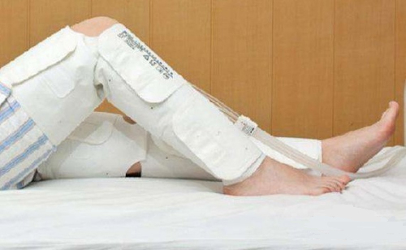
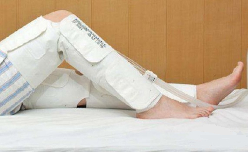

急救知识
First aid knowledge
骨折后第一时间的应急处理非常关键，如果处理不当会对病患带来二次伤害，所以熟知骨折后应急处理的方法很关键。骨折发生后，应当先拨通120求救。
其次，迅速找到木板代替夹板固定患处。固定方法可以用木板附在患肢一侧，在木板和肢体之间垫上棉花或毛巾等松软物品，再用带子绑好，松紧要适度。
 

木板要长出骨折部位上下两个关节，做超过关节固定，这样才能彻底固定患肢。进行简单的固定后，要及时送往医院，以免耽误了治疗时机。在运送伤员方面，伤员在车上宜